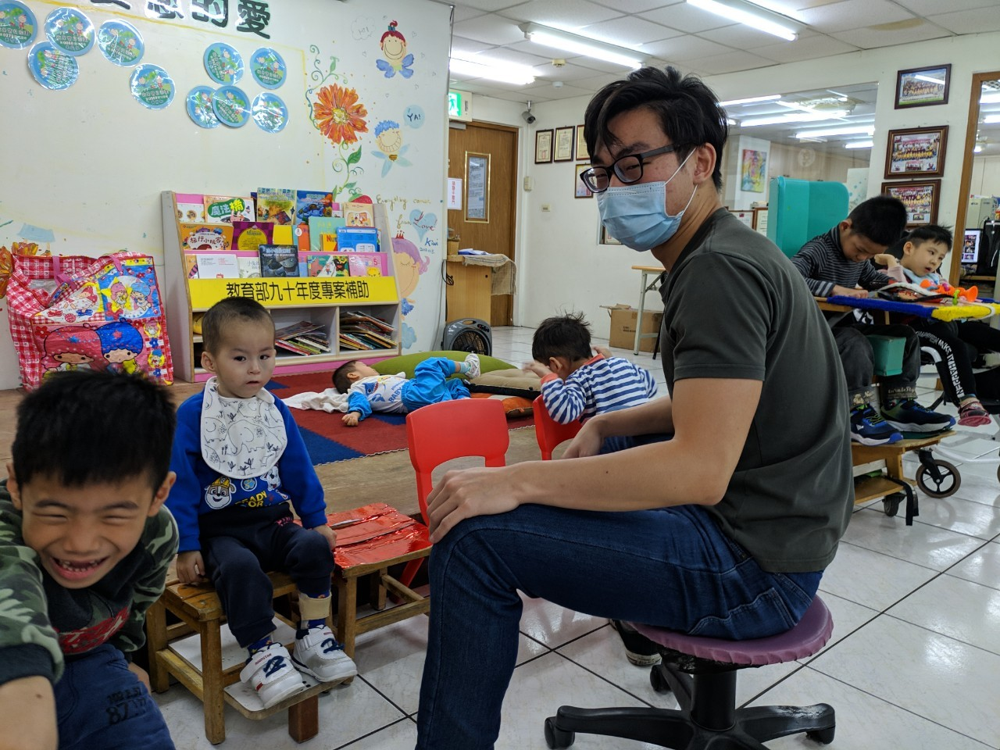
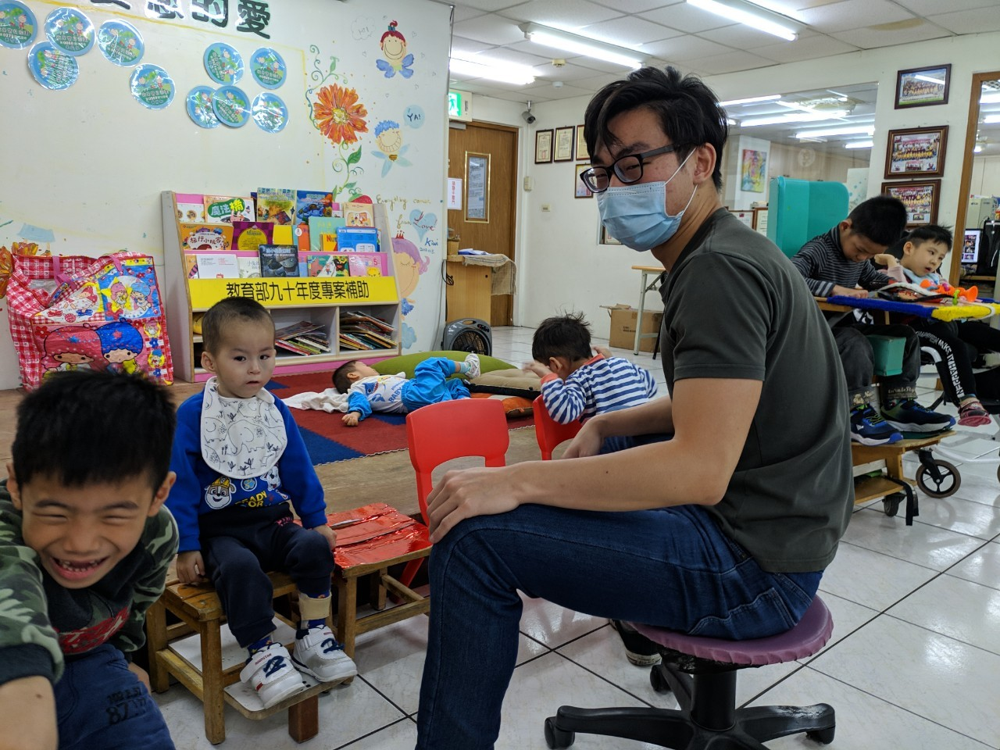

2020/03/31
傅昱翔
心得
有了上次的經驗，期待能接觸其他班級的小朋友，這次我來到小熊班， 這個班級的小孩普遍年齡比較大，大多能自由活動，更有幾個能講出幾句話來， 只是咬字不是那麼標準，正當我準備高興能有進一步的互動時，發現他們的活動力驚人， 時常要控制他們的行動，無法好好地坐在椅子上課，又或是四處翻箱倒櫃的找尋玩具， 連玩玩具的方式也十分特殊，讓我特別好奇他們的想法思路，與他們相處的時間過得異常快， 很多事情需要幫忙老師瞻前顧後，不過等到喝水或吃飯時間時，卻沒什麼胃口， 不禁好奇平常怎麼能這麼有活力。
戴睿廷
心得
這是第一次照顧小孩，
陳冠名
心得
這是第一次照顧小孩，
徐振捷
心得
這是第一次照顧小孩，
楊宗叡
心得
在第二次到寶貝潛能開發中心，我還是到了大象班，有了上一次的經驗，有知道每個小朋友的個性， 能相處的比較容易，他們需要什麼都比較了解，老師上課是給小朋友們常常酸甜苦辣，上周試了酸的檸檬，甜的糖果，而在這週老師給他們試了苦的黃蓮粉，和辣的麻婆豆腐，當然有些小朋友因為看到前面同學的表情，當然也知道是個不好吃的東西，雖然在一旁看起來有些殘忍，但我覺得試試是一定要的，至少小朋友能對味覺產生一些印象，有些小朋友在吃飯時故意打翻，可能是吸引老師注意吧，又或是覺得老師偏心所以用這樣的行為來讓老師或是我們多多去關注他，這些小朋友其實跟我們是沒有階級之分的，只是他們都是先天上的一些缺失而導致可能無法正常生活而已，所以我覺得最好的方法就是把他們當成一般人看待就好，有需要伸手援助這樣。